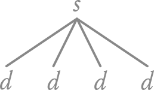
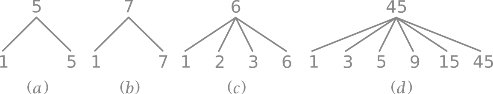
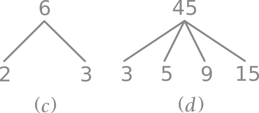
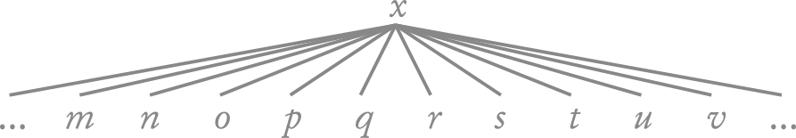
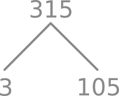
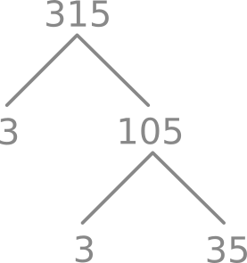
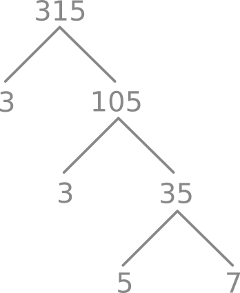

Intro
Tentang Buku Ini
Ini adalah buku tentang Pra-Aljabar yang saya tulis. Buku ini ditulis dengan asumsi anda sebelumnya telah meng-grasp matematika yang diajarkan semasa SD, karena tujuan buku ini ditulis adalah sebagai bahan untuk matrikulasi/refresher. Buku ini merangkum semua konsep yang ada di dalam Pra-Aljabar, namun tidak dilengkapi dengan problem yang bisa dijadikan acuan untuk latihan (meskipun ada beberapa bagian di dalam tulisan ini yang saya sertakan contoh kasusnya juga). Jika anda memerlukan problem untuk latihan, anda bisa mencarinya sendiri di internet.
Karena buku ini dibuat sebagai refresher, maka goals buku ini adalah membantu mengingat kembali, sekaligus menguatkan/mempertajam konsep-konsep Pra-Aljabar yang sebelumnya telah kita dapatkan di bangku sekolah.
Lisensi

Ciptaan disebarluaskan di bawah Lisensi Creative Commons Atribusi-NonKomersial-BerbagiSerupa 4.0 Internasional.
Tentang Penulis
Hai, Saya adalah Ariandy/1kb. Itu saja. :D
Lainnya
Progress -> 22%
Catatan
Ilustrasi di buku ini akan terlihat dengan warna yang agak blend jika menggunakan theme seperti Light atau Rust. Contohnya,
Warna ini saya pilih dikarenakan apabila saya memilih warna hitam, maka ilustrasi tersebut tidak terlihat pada theme Coal, Navy dan Ayu.
Namun jika saya menggunakan warna putih untuk ilustrasinya, maka ilustrasi tersebut tidak terlihat pada theme Light dan Rust.
Itu sebabnya saya memilih warna abu-abu, agar ilustrasi tersebut bisa terlihat pada semua theme, meskipun menjadi agak blend dengan warna latar pada theme Light dan Ayu.
Angka & Himpunan
Angka
Di saat saya menyebut kata "angka" atau "bilangan", mungkin secara spontan anda akan memikirkan angka-angka seperti 1, 2, 3, 4, 5, dan seterusnya, yang biasa kita sebut dengan angka positif, yang mana mereka adalah angka yang lebih besar daripada 0. Atau mungkin bisa juga anda akan terpikir angka 0, 1, 2, 3, dan seterusnya.
Namun, bisa jadi juga kita tidak terpikir (secara spontan) bahwa ternyata ada angka lain seperti angka negatif (angka yang lebih kecil dari 0. Misal, -7), pecahan (misal \(\frac{43}{11}\)), desimal (misal, 0.8) atau juga bilangan akar (misal, \(\sqrt{36}\)).
Untuk mengingat ulang angka-angka tersebut, kita akan memulainya dari Bilangan Riil.
Himpunan Angka
Hampir sebagian besar angka yang anda gunakan sepanjang pelajaran matematika dari SD, SMP, bahkan SMA menggunakan bilangan riil.
Bilangan riil \((\mathbb{R})\) terbagi menjadi dua, yaitu bilangan rasional dan bilangan irasional.
Bilangan rasional \((\mathbb{Q})\) adalah bilangan yang berupa pecahan. Contohnya, \[\frac{11}{11}, \frac{69}{96}, -\frac{6}{7}, \frac{100}{2}, ...\]
Simbol \(\mathbb{Q}\) diberikan oleh Peano (matematikawan berdarah Itali) karena bilangan rasional merupakan hasil bagi dari sebuah angka terhadap angka lainnya, yang di dalam bahasa Itali disebut dengan Quoziente.
Angka desimal yang memiliki akhir ataupun desimal yang berulang, mereka juga adalah bilangan rasional. \[-1.75, 0.123123, 0.666, 6.9, ...\]
Bilangan bulat \((\mathbb{Z})\) atau yang biasa dikenal sebagai Integer (diambil dari bahasa Latin, yang berarti "Whole" dalam bahasa Inggris atau "Utuh" dalam bahasa Indonesia) merupakan anggota bilangan rasional yang bisa dituliskan tanpa menggunakan bentuk pecahan. Anggota himpunannya adalah angka yang sebelumnya kita pikirkan (0, 1, 2, 3, 4, ...) dan juga bilangan negatif. Sehingga, inilah anggota himpunan bilangan bulat:
\[..., -4, -3, -2, -1, 0, 1, 2, 3, 4, ...\]
Simbolnya dilambangkan dengan \(\mathbb{Z}\) karena kata "Angka" di dalam bahasa Jerman adalah Zahlen.
Bilangan cacah \((\mathbb{N^0})\) adalah anggota bilangan bulat tanpa bilangan negatif (bilangan 0 dan bilangan positif). Sehingga inilah anggotanya:
\[0, 1, 2, 3, 4, ...\]
Sebenarnya, bilangan cacah di dalam bahasa Inggris adalah whole numbers dan dilambangkan dengan \(\mathbb{W}\). Namun, saya pribadi kurang menyukai penggunaannya karena penamaannya persis dengan Integer (yang artinya juga "whole" dari bahasa Latin). Oleh karenanya saya lebih suka menulisnya dengan simbol \(\mathbb{N^0}\). \(\mathbb{N}\) sendiri artinya "natural". Maka, arti dari \(\mathbb{N^0}\) adalah bilangan natural dengan nol.
Bilangan asli \((\mathbb{N^+})\) adalah anggota bilangan cacah tanpa nol (semuanya adalah angka positif). Anggotanya adalah:
\[1, 2, 3, 4, ...\]
Terkadang bilangan asli menggunakan simbol \(\mathbb{N}\) saja, karena ia disebut sebagai bilangan natural (meskipun saya pribadi lebih suka menggunakan simbol \(\mathbb{N^+}\)). Disebut natural karena ia adalah bilangan yang secara natural kita pahami saat pertama kali kita mempelajari angka-angka saat kita masih kecil/menginjak SD/mulai belajar berhitung. Itu sebabnya pula terkadang ia disebut sebagai "counting numbers" dalam bahasa Inggris.
Di luar sana, di saat kita menyebut bilangan asli/natural \((\mathbb{N})\), maka akan ada dua versi. Versi pertama, yaitu bilangan natural tanpa 0. Dan yang kedua, bilangan natural dengan 0. Versi pertama biasanya digunakan oleh matematikawan pada umumnya. Sedangkan matematikawan dari cabang lainnya (misalnya, Set Theorist) dan juga Logician menggunakan versi yang kedua. Inilah sebabnya mengapa saya pribadi lebih suka menggunakan \(\mathbb{N}^0\) untuk menggantikan \(\mathbb{W}\) dan menggunakan \(\mathbb{N}^+\) untuk menggantikan \(\mathbb{N}\).
Bilangan irasional \((\mathbb{R-Q})\) adalah semua bilangan riil \((\mathbb{R})\) yang tidak bisa dituliskan dalam bentuk pecahan. JIka kita mengubahnya ke desimal, ia akan berlanjut tanpa henti. Contoh dari bilangan irasional adalah \(\pi\) dan \(\sqrt(2)\).
\[\pi = 3.141592653589793238462643383279502884197169399375105820974...\] \[\sqrt{2} = 1.414213562373095048801688724209698078569671875376948073176...\]
Bilangan irasional disimbolkan sebagai \(\mathbb{R-Q}\) karena anggotanya adalah semua anggota dari himpunan \(\mathbb{R}\) yang bukan anggota dari himpunan \(\mathbb{Q}\).
Notasi Himpunan
Di atas, kita telah membicarakan tentang himpunan angka. Namun kita juga bisa membuat himpunan lain selain himpunan angka. Contohnya, kita bisa mendeskripsikan Himpunan Binatang seperti berikut.
\[Binatang = \{Ayam, Beruang, Cicak, Domba, Elang\}\]
atau juga mendeskripsikan Himpunan nama-nama negara anggota ASEAN.
\[Negara Anggota ASEAN = \{Indonesia, Malaysia, Brunei, Thailand\}\]
Kita umumnya menggunakan kurung kurawal untuk "mengurung" anggota-anggota dari sebuah himpunan. Jadinya, dengan menggunakan simbol yang kita pelajari pada himpunan angka, kita pun dapat menulis semua bilangan asli menggunakan notasi himpunan dengan cara sebagai berikut.
\[\mathbb{N^+} = \{1, 2, 3, 4, 5, 6, 7, ...\} \]
Identitas
Identitas adalah angka yang tidak mengubah "identitas" dari nilai asalnya.
Identitas untuk penjumlahan adalah 0.
Dan identitas untuk perkalian adalah 1.
Alasannya adalah,
Anda bisa menambahkan 0 dengan angka apapun dan ia tidak mengubah nilai asalnya/originnya.
Anda bisa mengalikan 1 dengan angka apapun dan ia tidak mengubah nilai asalnya/originnya.
Contoh
Berapa \(43+0\) ?
Tanpa memikirkan konsep tentang identitas, kita sudah tahu bahwa \(43+0=43\). Karena jika anda memiliki 43 dan anda tidak menambahkan apapun (atau menambahkan nol), kita tetap mendapatkan 43.
Jika kita berpikir tentang identitas ini secara lebih teknis, kita tahu bahwa 0 adalah identitas dalam penjumlahan. Nah, karena kita melakukan penjumlahan dengan angka 0, dan karena 0 adalah identitas dalam penjumlahan, maka kita pun tahu bahwa menjumlahkan 0 dan 43 tidak mengubah identitas dari 43. Sehingga \(43+0\) hasilnya adalah 43.
Berapa \(69\times1\) ?
Tentu saja tanpa mengetahui konsep tentang identitas, kita tahu hasilnya adalah 69. Namun, konsep tentang identitas ini mengonfirmasi bahwa hal ini benar. Kita telah tahu bahwa 1 adalah identitas untuk perkalian. Karena kita mengalikannya dengan 1, dan karena 1 adalah identitas dari perkalian, maka kita mengetahui bahwa mengalikan 69 dan 1 tidak akan merubah identitas dari 69. Sehingga \(69\times1\) akan menghasilkan 69.
Dengan penjelasan dan contoh di atas, kita bisa mengetahui bahwa,
\[z+0=z\] \[z\times1=z\] \[ijk+0=ijk\] \[ijk\times1=ijk\]
Invers Aditif
Di saat kita berbicara tentang invers aditif, kita sebenarnya berbicara tentang versi positif dan versi negatif dari sebuah angka. Singkatnya, invers aditif adalah lawan dari sebuah angka. Anda juga bisa menyebut konsep ini dengan sebutan "perubahan tanda bilangan", atau juga "negasi". Atau kalau ingin menggunakan definisi yang agak lebih baku, ia adalah bilangan yang jika ditambahkan ke suatu variabel \(x\), maka ia akan menghasilkan angka 0 (identitas penjumlahan). Atau bisa dituliskan seperti berikut,
\[Bilangan + x = 0\]
Masih terdengar sulit?
Okay. Sebelum kita bahas tentang angka yang berlawanan, agar lebih mudah, kita mundur sejenak dan kembali ke bilangan negatif. Cara termudah untuk mengilustrasikan bilangan negatif adalah dengan menggunakan garis bilangan.
Pada garis bilangan ini, kita bisa melihat bahwa angka 0 ada di tengah. Angka-angka yang berada pada sebelah kanan 0 adalah bilangan positif. Sedangkan yang berada pada sebelah kiri dari angka 0 adalah negatif.
Hal penting lainnya yang bisa kita lihat dari garis bilangan ini adalah angka 1 dan -1 memiliki jarak yang sama dari 0. Bisa kita katakan bahwa 1 dan juga -1 memiliki jarak "satu unit" dari 0. Serupa pula dengan 5 dan juga -5, keduanya memiliki jarak yang sama dari 0. Keduanya memiliki jarak "lima unit" dari 0
Jika kata "unit" terdengar asing, anda bisa menggantinya dengan kata "satuan". Terkadang, di telinga beberapa orang, kata satuan terdengar aneh, misalnya di saat saya menyebut "satu satuan". Untuk mencegah kerancuan ini, maka saya menggunakan kata "unit".
Unit/Satuan sendiri bisa diubah satuannya. Misal, barang berwujud fisik yang hampir mirip dengan garis bilangan ini adalah penggaris. Penggaris umumnya memiliki satuan sentimeter(cm). Atau di saat kita sedang mengukur luas rumah, biasanya kita menggunakan satuan meter (m). Tapi berhubung pada garis bilangan di atas tidak ada satuan yang digunakan, maka kita cukup menyebutnya dengan satuan/unit (misal, "satu satuan"/"satu unit", "tiga satuan"/"tiga unit")
Kembali ke konsep tentang angka yang berlawanan. Angka yang berlawanan ini adalah angka yang memiliki jarak yang sama dari 0. Dan oleh karena itu, 1 dan -1 adalah angka yang berlawanan (karena keduanya memiliki jarak yang sama dari 0). Begitu pula dengan 5 dan -5, ia adalah invers aditif, karena memiliki jarak yang sama dari 0, yaitu lima unit.
Tentu saja 9 dan 11 bukan invers aditif. Karena jaraknya berbeda. Dua buah angka bukanlah invers aditif jika jaraknya dari 0 ternyata berbeda atau memiliki arah yang sama (dua angka tersebut sama-sama positif atau sama-sama negatif).
Hal paling mudah untuk menemukan invers aditif dari sebuah angka adalah dengan cara memberikannya tanda negatif jika angkanya postif, atau menghilangkan tanda negatif jika angkanya negatif.
Contoh
Apa invers aditif dari 11 ?
Karena 11 adalah bilangan positif, kita cukup memberikan tanda negatif, sehingga kita mendapatkan -11. 11 dan -11, keduanya memiliki jarak sebanyak sebelas unit dari 0 jika kita melihatnya dari garis bilangan. Oleh karena itu, 11 dan -11 adalah invers aditif.
Apa invers aditif dari -6 ?
Karena -6 adalah bilangan negatif, kita cukup menghilangan tanda negatifnya, sehingga kita mendapatkan 6. -6 dan 6, keduanya memiliki jarak sebanyak sebelas unit dari 0. Oleh karena itu, -6 dan 6 adalah invers aditif.
0
Bagaimana dengan 0? Apakah 0 memiliki invers aditif? Mari kita lihat lagi garis bilangan tersebut.
Kita bisa menemukan invers aditif dengan cara mengukur jarak yang sama dari 0, namun dari arah yang berlawanan. 100 memiliki jarak sebanyak seratus unit ke kanan dari 0. Jika anda mencari invers aditifnya, maka anda perlu seratus unit ke sebelah kiri dari 0, yang mana itu adalah -100.
Namun, 0 sendiri memiliki "nol unit" dari 0 (hanya angka 0 yang memiliki jarak nol unit dari 0). Ini dikarenakan 0 bukanlah bilangan positif ataupun negatif. Sehingga kebalikan dari 0 adalah 0. Atau dengan kata lain, kebalikan dari 0 adalah dirinya sendiri.
Pengurangan (Kasus Spesifik) & Negatif Berganda
Karena ini adalah materi refresher, jadi saya tidak perlu membahas tentang penjumlahan. Namun saya ingin masuk agak dalam ke konsep pengurangan.
Ada beberapa orang di luar sana sewaktu masih SD, yang terkadang "terpeleset" (termasuk saya xD) sewaktu bertemu operasi seperti,
\[3+(-5)\]
Dan juga,
\[3-(-5)\]
Pada kasus pertama, 3+(-5), guru kita biasanya memberikan trik dengan berkata, "Kalau bertemu yang seperti ini, hilangkan saja tanda tambahnya."
Sedangkan pada kasus kedua, 3-(-5), guru kita memberikan trik dengan berkata, "Kalau ada dua buah minus, hilangkan minus-minus itu dan langsung tambahkan saja."
Meskipun kita tahu trik-trik tersebut, tapi mungkin beberapa dari kita kurang memahami mengapa trik tersebut bekerja.
Untuk memahaminya, ikuti penjelasan di bawah.
Bentuk lain dari pengurangan
Nah, jika dilihat dari formatnya, penjumlahan adalah menambahkan angka ke-1 (kita simbolkan dengan \(x\)) dan angka ke-2 (dengan simbol \(y\))
\[x+y\]
Sedangkan pengurangan adalah mengurangi angka ke-1 dengan angka ke-2.
\[x-y\]
Sadar atau tidak, di saat kita sedang melakukan pengurangan, sebenarnya kita sedang melakukan penjumlahan. Lebih tepatnya, pengurangan merupakan penjumlahan terhadap angka ke-2 yang diubah menjadi invers aditifnya (definisi #1).
\[3-5=3+(-5)\]
Kita bisa lihat bahwa kita melakukan pengurangan dengan 5. Padahal sebenarnya kita sedang melakukan penjumlahan dengan -5. Dan hasilnya adalah -2.
Dengan melihat bentuk lain tersebut, kita pun bisa membuat definisi lain: pengurangan merupakan penjumlahan terhadap angka ke-2 yang telah disertakan tanda negatif (definisi #2). Kedua definisi ini akan mendapatkan hasil yang sama, namun dengan cara yang berbeda. Mari kita gunakan definisi yang pertama terlebih dahulu.
Pengurangan terhadap angka ke-2 yang negatif (Definisi #1)
Tadi, kita melakukan pengurangan terhadap angka ke-2 yang positif. Bagaimana kalau kita melakukan pengurangan pada angka ke-2 yang negatif?
\[3-(-5)\]
Mengikuti definisi #1, pengurangannya menjadi penjumlahan, dan invers aditif dari angka ke-2 (-5) adalah 5. Maka,
\[3-(-5)=3+5\]
Dan hasilnya adalah 8.
Menggunakan Definisi #2
Okay. Di definisi #2, dikatakan bahwa pengurangan merupakan penjumlahan terhadap angka ke-2 yang telah disertakan tanda negatif. Sehingga,
\[3-(-5)=3+(-(-5))\]
Di atas, kita menambahkan sepasang kurung untuk memudahkan kita membacanya. Namun, jika anda lebih suka membuatnya terlihat lebih sederhana, kita bisa menghilangkan satu pasang kurung pada pada ruas kanan.
\[3-(-5)=3+(--5)\]
Voila! Dan kita mendapatkan double negative, atau dalam bahasa Indonesia adalah "negatif berganda". Nah, jika kita menemukan negatif berganda. Kita bisa langsung menghilangkannya.
\[--5=5\]
Sehingga,
\[3-(-5)=3+(5)\]
Atau,
\[3-(-5)=3+5\]
Dan hasilnya adalah 8.
Nah, sebenarnya kalau kita mengikuti-apa-kata-guru-kita™ dan melihat aturan negatif berganda, kita tidak perlu memecah operasinya menjadi seperti operasi di ruas kanan. Cukup hilangkan "minus-minus" tersebut (yang ada di ruas kiri), dan ubah menjadi tanda "plus". Namun, terkadang saya melihat beberapa murid kritis, di saat mereka menemukan kasus seperti \(3-(-5)\), mereka tidak puas dengan jawaban guru yang "tiba-tiba" melakukan pertukaran dua buah minus tersebut menjadi satu buah plus. Sebagian dari mereka lagi, akan langsung mencoba melakukan penghapusan terhadap "minus-minus" tersebut (mengaplikasikan aturan negatif berganda) dan mendapatkan angka 35. Kemudian bertanya-tanya darimana tanda plus tersebut hadir. xD
Untuk itulah saya menuliskan hal ini.
Penjumlahan & Pengurangan Pada Bilangan Bertanda
Apa itu Bilangan bertanda?
Izinkan saya untuk sedikit mengulang materi sebelumnya. Kita tahu bahwa angka negatif memiliki tanda "-" (misal -1, -2, -3, dst). Nah, sebenarnya, angka positif pun memiliki tanda "+". Namun kita sering tidak menuliskan tanda "+" di depan angka positif, agar angka tersebut terlihat sederhana. Jadi, kita tak perlu menuliskan +1, +2, +3, +4, dst. Cukup dengan 1, 2, 3, 4, 5, dst. Sehingga, 11, 69, 100 adalah "angka bertanda positif". Dan -7, -43, -99 adalah "angka bertanda negatif". Kita cukup menyebutnya "angka positif" dan "angka negatif" tanpa perlu menambahkan kata "bertanda" di tengahnya. Jadi, singkatnya bilangan bertanda adalah bilangan positif dan negatif.
Di saat kita melakukan penjumlahan dan pengurangan pada angka bertanda, kita memiliki tiga kombinasi yang memungkinkan dari dua angka bertanda yang akan kita jumlahkan/kurangkan.
- Keduanya adalah angka positif
- Keduanya adalah angka negatif
- Satu angka positif dan yang satunya lagi adalah angka negatif
Mari kita lakukan penjumlahan terhadap tiga kombinasi tersebut.
Positif + Positif = Positif. Contohnya, \[40+3=43\] \[10+7=17\] Negatif + Negatif = Negatif. Cheatnya, anggap saja keduanya adalah angka postif, lalu jumlahkan keduanya. Dan tambahkan tanda negatif pada hasilnya. Juga, pada pembahasan sebelumnya, kita bisa mengubahnya menjadi Negatif - Positif. Contohnya, \[-40+(-3)=-40-3=-43\] \[-10+(-7)=-10-7=-17\] Positif + Negatif dan Negatif + Positif. Di saat kita menjumlahkan satu angka positif dan satu angka negatif, hasilnya akan positif jika angka positifnya lebih besar. Namun, hasilnya akan negatif jika angka negatifnya lebih besar.
"Besar" yang dimaksud di sini artinya adalah memiliki jarak yang lebih jauh dari 0 jika digambarkan pada garis bilangan.
Karena di saat kita bertanya "Yang mana yang lebih besar antara 1 dan -9 ?", beberapa orang akan menjawab bahwa 1 lebih besar daripada -9, yang mana jawaban tersebut tidaklah salah. Namun, karena konteks "besar" yang dimaksud disini adalah "yang jaraknya lebih jauh dari 0", oleh karenanya, -9 yang lebih besar.
Cheat untuk kasus ini adalah anggap saja kedua bilangan tersebut adalah positif. Lalu kurangkan angka yang besar ke angka yang kecil. Lalu tanda pada hasilnya menyesuaikan mengikuti tanda pada angka yang besar. Contohnya,
\[6+(-9)\]
Mengikuti cheat tersebut, yang terbesar adalah -9. Maka 9-6, dan hasilnya adalah 3. Karena tanda pada hasilnya mengikuti tanda dari angka yang terbesar (-9, yang mana adalah angka negatif), maka hasilnya adalah -3.
Contoh lainnya adalah,
\[8+(-2)\]
Yang terbesar adalah 8. Maka 8-2, dan hasilnya adalah 6. Karena angka terbesarnya adalah 8 (yang mana adalah positif). Maka hasilnya adalah 6.
Jika angka positif dan angka negatifnya berlawanan, maka hasilnya adalah 0.
\[43+(-43)=0\] \[-11+11=0\]
Sekarang kita lakukan operasi pengurangan pada kombinasi-kombinasi tersebut.
Positif - Positif. Hasilnya akan positif apabila angka ke-1 lebih besar. Namun menghasilkan negatif jika angka ke-2 lebih besar. Dan seperti yang kita tulis pada bagian sebelumnya, bahwa pengurangan itu adalah menjumlahkan dengan mengubah angka ke-2 menjadi invers aditifnya. Contohnya,
\[2-6=2+(-6)=-4\]
Angka ke-1 adalah 2. Dan angka ke-2 adalah -6. Karena -6 (angka ke-2) lebih jauh dari 0 daripada 2, maka hasilnya adalah negatif.
\[45-2=45+(-2)=43\]
Angka ke-1 adalah 45. Dan angka ke-2 adalah -2. Karena 45 (angka ke-1) lebih jauh dari 0 daripada -2, maka hasilnya adalah positif.
Jika kedua angka positif tersebut adalah equal/sama, maka hasilnya adalah 0.
\[10-10=0\]
Negatif - Negatif. Kebalikan dari "Positif - Positif", hasilnya akan negatif apabila angka ke-1 lebih besar, namun menghasilkan positif jika angka ke-2 lebih besar.
\[-6-(-8)=-6+8=2\]
Angka ke-1 adalah -6. Dan angka ke-2 adalah -8. Karena angka ke-2 (-8) lebih besar daripada angka ke-1. Maka hasilnya adalah positif.
\[-13-(-2)=-13+2=-11\]
Angka ke-1 adalah -13. Dan angka ke-2 adalah -2. Karena angka ke-1 (-13) lebih besar daripada angka ke-2. Maka hasilnya adalah negatif.
Jika kedua angka negatif itu adalah sama, maka hasilnya adalah 0.
\[-11-(-11)=-11+11=0\]
Positif - Negatif = Positif.
\[6-(-5)=6+5=11\] \[40-(-3)=40+3=43\]
Negatif - Positif = Negatif.
\[-6-5=-6+(-5)=-11\] \[-40-3=-40+(-3)=-43\]
Rangkuman
| Positif + Positif | Positif |
| Negatif + Negatif | Negatif |
| Positif + Negatif | Positif, jika angka positifnya lebih besar |
| Negatif, jika angka negatifnya lebih besar | |
| 0, jika kedua angkanya adalah invers aditif | |
| Negatif + Positif | Positif, jika angka positifnya lebih besar |
| Negatif, jika angka negatifnya lebih besar | |
| 0, jika kedua angkanya adalah invers aditif | |
| Positif - Positif | Positif, jika angka ke-1 lebih besar |
| Negatif, jika angka ke-2 lebih besar | |
| 0, jika angkanya sama | |
| Negatif - Negatif | Positif, jika angka ke-2 lebih besar |
| Negatif, jika angka ke-1 lebih besar | |
| 0, jika angkanya sama | |
| Positif - Negatif | Positif |
| Negatif - Positif | Negatif |
Sifat Komutatif
Di saat kita melakukan penjumlahan, tidak akan ada masalah jika kita menukar letak kedua angkanya.
\[6+3=3+6=9\] \[-2+(-4)=-4+(-2)=-6\] \[-5+5=5+(-5)=0\]
Sifat "bisa menukar letak" ini adalah sifat komutatif. Sifat komutatif ini tidak berlaku pada pengurangan. Menukar letaknya akan memberikan hasil yang berbeda.
\[5-4=1 \quad sedangkan \quad 4-5=-1\] \[-10-2=-12 \quad sedangkan \quad 2-(-10)=12\] \[5-(-5)=10 \quad sedangkan \quad -5-5=10\]
Perkalian Pada Bilangan Bertanda
Sama seperti sebelumnya, saat melakukan perkalian, kita akan mendapati 3 kombinasi.
- Dua-duanya positif
- Dua-duanya negatif
- Yang satu positif dan yang satunya lagi negatif
Mari kita bahas bagaimana hasil dari setiap kombinasi tersebut.
Saat kita mengalikan dua buah angka positif, hasilnya akan selalu positif.
\[10\times2=20\] \[6\times5=30\]
Di saat kita mengalikan 2 buah angka negatif, hasilnya akan selalu positif.
\[-10\times-2=20\] \[-6\times-5=30\]
Di saat salah satunya negatif dan lainnya positif, maka hasilnya negatif.
\[-10\times2=-20\] \[-6\times(-5)=-30\]
Dengan kata lain, jika kita melakukan perkalian pada angka yang bertanda sama, maka hasilnya positif. Jika perkalian dilakukan dengan dua angka yang tandanya berbeda, maka hasilnya negatif.
Jangan lupa pula, jika ada 0 dalam perkalian tersebut, maka hasilnya adalah 0. Apapun yang dikalikan dengan 0, maka hasilnya adalah 0.
Berikut ini adalah rangkumannya.
| Positif \(\times\) Positif | Positif |
| Negatif \(\times\) Negatif | Positif |
| Positif \(\times\) Negatif | Negatif |
| Negatif \(\times\) Positif | Negatif |
| (Apapun tandanya) \(\times\) 0 | 0 |
| 0 \(\times\) (Apapun tandanya) | 0 |
Ah ya, sifat komutatif berlaku di perkalian. Anda bisa mencoba mengganti angkanya dan menukar letaknya. \[4\times3=12=3\times4\]
Cara Penulisan
Sejauh ini kita menggunakan tanda \(\times\) untuk melakukan perkalian. Semakin dalam anda mempelajari matematika, anda nantinya akan menggunakan tanda titik, menggantikan tanda silang. Jadi anda tidak perlu bingung apabila anda nantinya menemukan tanda titik seperti \(2\cdot3\). Itu sama seperti \(2\times3\).
Perhatikan baik-baik, jangan sampai anda mengira itu tanda titik untuk desimal (bilangan berkoma). Titiknya diletakkan lebih tinggi daripada di saat menuliskan titik untuk penulisan desimal. Penggunaan titik ini diperlukan karena di saat anda mulai masuk ke tahap aljabar, tanda \(\times\) lebih riskan tertukar dengan variabel \(x\) (terlebih jika anda menuliskannya dengan tulisan tangan).
Perhatikan juga tentang penulisan. Di saat anda melakukan perkalian dengan angka negatif (terlebih angka negatif tersebut adalah angka ke-2), disarankan untuk menggunakan tanda kurung agar lebih mudah dibaca. Meskipun begitu, semua cara tulis di bawah ini semuanya diperbolehkan.
\[3\times-5=-15\] \[(-7)\cdot3=-21\] \[(-10)\cdot(-10)=100\] \[(-2)\cdot(1)=2\]
Dan, anda pun tidak perlu kaget jika menemukan penulisan seperti ini, \(3(5)\). Itupun juga adalah perkalian. Cara tulis perkalian yang hanya menggunakan tanda kurung inipun diperbolehkan. Anda juga boleh menggunakan tanda kurung tersebut di kedua angkanya, misal \((3)(5)\). Jika anda hanya ingin menggunakan 1 tanda kurung, letakkan tanda kurung itu pada angka ke-2. Berikut adalah contoh untuk menggunakan tanda kurung pada perkalian.
\[5(6)=30\] \[5(-6)=-30\] \[-5(6)=-30\] \[(-4)(6)=-24\] \[(-10)(-5)=50\]
Perkalian Berulang
Sebagai tambahan, apabila anda menemukan kasus perkalian berulang seperti ini,
\[(2)(2)(-2)(-2)(1)(1)\] \[(2)(2)(-2)(-2)(1)(-1)\]
Kalau dari perkalian tersebut pertanyaannya adalah "Apakah hasilnya positif atau negatif?", kita bisa dengan mudah mengetahui hasilnya. Yang perlu kita lakukan adalah menghitung berapa banyak angka negatifnya, apakah banyaknya tersebut ganjil atau genap. Jika genap, maka hasilnya positif. Jika ganjil, maka hasilnya negatif.
Pada kasus pertama, angka negatifnya ada dua buah. Maka hasilnya adalah positif. Pada kasus kedua, angka negatifnya ada tiga buah. Maka hasilnya adalah negatif.
Pembagian Pada Bilangan Bertanda
Masih seperti sebelumnya, kita memiliki 3 kombinasi. Namun sekarang kita melakukan pembagian.
Di saat kita melakukan pembagian terhadap sesama positif, maka hasilnya akan positif. \[35\div7=5\]
Di saat kita melakukan pembagian terhadap sesama negatif, maka hasilnya akan positif. \[(-35)\div(-7)=5\]
Di saat salah satunya positif (dan yang lain adalah negatif), maka hasilnya adalah negatif.
\[35\div(-7)=-5\] \[(-35)\div7=-5\]
Bagaimana dengan 0?
Di saat 0 dibagikan dengan angka apapun, hasilnya adalah 0.
Analogi awamnya adalah seperti ini, anggap saja ada 5 pemancing yang memancing bersamaan. Mereka membuat semacam aturan, bahwa berapa ekor ikan pun yang mereka dapatkan nantinya akan ditotalkan dan dibagi rata menjadi 5. Di hari pertama memancing, nasib mereka mujur. Total mereka mendapatkan 100 ikan. Artinya, berdasarkan aturan yang mereka buat, masing-masing mendapatkan 20. Karena \(100\div5=20\). Tapi di hari ke-2, mereka semua tidak mendapatkan apapun. Karena memang tidak mendapatkan apapun, artinya tidak ada ikan yang bisa mereka bagi. \(0\div5=0\). Masing-masing pulang dengan tangan kosong.
Kita tidak bisa membagikan angka apapun dengan 0, karena ia akan menjadi "tak terdefinisi". Penjelasan tentang ini akan dibahas pada bagian selanjutnya.
Sehingga, sejauh ini kita bisa merangkum,
| Positif \(\div\) Positif | Positif |
| Negatif \(\div\) Negatif | Positif |
| Positif \(\div\) Negatif | Negatif |
| Negatif \(\div\) Positif | Negatif |
| 0 \(\div\) (Apapun tandanya) | 0 |
| (Apapun tandanya) \(\div\) 0 | Tak terdefinisi |
Cara Penulisan
Sedari tadi, kita menuliskan pembagian dalam bentuk horizontal/mendatar menggunakan simbol pembagian (\(\div\)). Kita juga bisa menuliskannya dalam bentuk vertikal, atau yang biasa kita sebut sebagai pecahan.
\[12\div3=\frac{12}{3}=4\]
Mengubah pembagian dalam bentuk horizontal ke dalam bentuk pecahan ini akan dijelaskan pada sub-bab selanjutnya.
Sangat, sangat dan sangat disarankan menggunakan tanda kurung untuk angka negatif di saat menuliskan pembagian. Anda bisa melakukannya pada bentuk horizontal ataupun vertikal, namun tanda kurung ini benar-benar sangat berguna saat kita menuliskan pembagian tersebut dalam bentuk horizontal.
\[20\div(-5)=-4\] \[(-20)\div5=-4\] \[\frac{20}{(-5)}=-4\] \[\frac{(-20)}{(-5)}=4\]
Seringkali, kita tidak perlu menggunakan tanda kurung pada angka positif saat melakukan pembagian. Karena terkadang menggunakan tanda kurung pada angka positif saat pembagian justru mempersulit untuk membacanya. Namun boleh-boleh saja jika Anda ingin melakukannya.
Pembagian Berulang
Sama seperti perkalian, apabila anda menemukan kasus pembagian berulang seperti ini,
\[2\div2\div(-2)\div(-2)\div1\div1\] \[2\div2\div(-2)\div(-2)\div1\div(-1)\]
Dan pertanyaannya sama seperti sebelumnya, yaitu "Apakah hasilnya positif atau negatif?", maka lakukan hal yang sama seperti yang kita lakukan di perkalian berulang. Hitung berapa banyak angka negatifnya, apakah banyaknya tersebut ganjil atau genap. Jika genap, maka hasilnya positif. Jika ganjil, maka hasilnya negatif.
Di kasus pertama, angka negatifnya ada dua buah. Maka hasilnya adalah positif. Sedangkan di kasus kedua, angka negatifnya ada tiga buah. Maka hasilnya adalah negatif.
Invers Multiplikatif, Tak Terdefinisi & Bentuk Lain Dari Pembagian
Invers Multiplikatif
Mari kita tuliskan lagi definisi Invers Aditif yang kita bahas di bagian sebelumnya.
Invers Aditif adalah bilangan yang jika ditambahkan ke suatu variabel \(x\), maka ia akan menghasilkan angka 0 (identitas penjumlahan).
Sekarang, kita pinjam definisinya dan mengubahnya sedikit untuk membuat definisi Inverse Multiplikatif,
Invers Multiplikatif adalah bilangan yang jika dikalikan ke suatu variabel \(x\), maka ia akan menghasilkan angka 1 (identitas perkalian).
Contohnya adalah seperti berikut.
Berapa invers multiplikatif dari 9? Untuk menjawab ini, tentunya kita harus mencari angka berapa yang apabila dikalikan dengan 9, maka ia akan menjadi 1. Maka jawabannya adalah \(\frac{1}{9}\). Karena,
\[9\cdot\frac{1}{9}=1\]
Dengan ini, kita mengetahui bahwa invers multiplikatif dari 9 adalah \(\frac{1}{9}\). Sebaliknya, invers multiplikatif dari \(\frac{1}{9}\) adalah 9.
Ah ya, anda nantinya akan jarang mendengar istilah invers multiplikatif ini. Ini adalah hal yang wajar karena ia lebih populer disebut sebagai "resiprok". Jadi anda tidak perlu bingung dengan invers multiplikatif dan resiprok. Keduanya adalah hal yang sama.
Pembagian dengan 0 dan Tak terdefinisi
Sekarang, kita ubah pertanyaannya.
Berapa invers multiplikatif dari 0?
\[0\times?=1\]
Nah, dengan invers multiplikatif, kita mengetahui bahwa,
\[10\times\frac{1}{10}=1\] \[\vdots\] \[4\times\frac{1}{4}=1\] \[3\times\frac{1}{3}=1\] \[2\times\frac{1}{2}=1\] \[1\times1=1\]
Bagaimana dengan,
\[0\times\frac{1}{0}\]
Tentu saja kita akan gagal mendapatkan 1. Karena apapun yang dikalikan dengan 0 akan menghasilkan 0. Atau dengan kata lain, 0 tidak memiliki invers multiplikatif.
Itu sebabnya kita tidak bisa melakukan pembagian dengan 0, karena akan menjadi tak terdefinisi.
Bentuk Lain Dari Pembagian (Pembagian Ke Pecahan)
Di bagian tentang pengurangan, ada definisi,
Pengurangan merupakan penjumlahan terhadap angka ke-2 yang diubah menjadi invers aditifnya
Sebenarnya hal serupa juga terjadi di pembagian. Definisinya adalah,
Pembagian merupakan perkalian terhadap angka ke-2 yang diubah menjadi invers multiplikatifnya
Contohnya adalah seperti ini.
Misal, kita ingin melakukan pembagian seperti berikut.
\[10\div10\]
Angka ke-2 adalah 10 dan invers multiplikatifnya adalah \(\frac{1}{10}\). Maka kita bisa mengubah bentuknya menjadi,
\[10\div10=10\times\frac{1}{10}\]
Hal ini juga menjelaskan mengapa kita bisa mengubah formatnya, dari pembagian horizontal ke pembagian vertikal (pecahan).
Pada contoh di sub-bab sebelumnya, kita melakukan,
\[12\div3\]
Nah, sebenarnya saat kita membagikan 12 dengan 3, kita melakukan perkalian antara 12 dengan invers multiplikatif dari 3, yaitu \(\frac{1}{3}\). Sehingga,
\[12\div3=12\times\frac{1}{3}\]
Maka,
\[12\div3=12\times\frac{1}{3}=\frac{12}{3}\]
Itulah penjelasan mengapa kita bisa mengubah pembagian berformat horizontal ke dalam bentuk pecahan.
Konsep ini merupakan fondasi utama di saat melakukan pembagian dengan antar sesama pecahan. Untuk sementara, cukup pahami ini dengan baik. Pengaplikasiannya dalam pembagian antar pecahan akan dibahas pada bab lain.
Nilai Absolut
Nilai absolut bisa diartikan sebagai "seberapa jauh jarak suatu angka dari 0".
Untuk lebih mudahnya, kita kembali melihat pada garis bilangan.
Kita bisa mengatakan bahwa 3 berada di jarak tiga unit dari 0. Begitu juga -3 yang merupakan lawan dari 3, ia pun berjarak tiga unit dari 0. Sehingga, keduanya (3 dan -3) memiliki jarak tiga unit dari 0.
1 berjarak satu unit dari 0, dan -4 memiliki jarak 4 unit dari 0.
Jadinya, di saat kita mengubah angka positif dan negatif menjadi seberapa jauh jarak mereka dari 0, maka kita mendapatkan,
| Angka | Jarak dari 0 |
|---|---|
| 3 | 3 |
| -3 | 3 |
| -4 | 4 |
| 5 | 5 |
Yang menarik adalah semua angka (entah ia positif atau negatif), akan menjadi positif jika kita ingin mengetahui jaraknya dari 0.
Jadi, seperti inilah nilai absolut. Ia akan mengubah setiap angka menjadi seberapa jauh jaraknya dari originnya (titik asal, yaitu 0). Atau singkatnya, mengubah semua angka positif dan negatif menjadi hanya angka positif. Ia pun mengubah 0 menjadi 0, karena 0 memiliki jarak sejauh nol unit dari dirinya sendiri.
Untuk merepresentasikan nilai absolut ini ke dalam sebuah simbol, kita akan menggunakan simbol "|". Simbol tersebut biasanya disebut dengan "vertical bar", atau jika anda adalah programmer di beberapa bahasa pemrograman tertentu, anda akan mengenalnya dengan nama "pipe". Di sini kita akan menggunakannya sebagai tanda kurung dan menyebutnya dengan "kurung absolut". Cara menggunakan simbol ini adalah dengan cara mengurung angka yang ingin diubah menjadi nilai absolut dengan simbol ini. Contohnya,
\[|-8|\]
\(|-8|\) artinya adalah "ambil nilai absolut dari -8". Kita telah mengetahui bahwa nilai absolut dari -8 adalah 8. Karena -8 berjarak delapan unit dari 0. Berikut ini adalah contoh lainnya.
\[|-43| = 43\] \[|43| = 43\] \[|-11| = 11\] \[|11| = 11\] \[|-92| = 92\] \[|92| = 92\]
Kita tidak hanya bisa mengambil nilai absolut dari sebuah angka, namun juga kita bisa mengambil nilai absolut dari ekspresi matematika (misalnya, ekspresi untuk operasi penjumlahan, pengurangan, perkalian, pembagian, ataupun ekspresi matematika yang memiliki dua buah atau lebih operasi), dan kita "kurung" ekspresi tersebut dengan menggunakan kurung absolut. Dan tentu saja, apapun ekspresi di dalam kurung absolut tersebut akan menghasilkan positif (kecuali nilai dari ekspresinya adalah 0, yang mana artinya adalah nilai absolutnya bernilai 0).
Hal penting lainnya adalah, kita harus kerjakan terlebih dahulu ekspresi yang ada di dalam kurung absolut sebelum mengambil nilai absolutnya. Sebagai contoh,
\[|-2-43|\]
Anda mungkin saja berpikir untuk menghilangkan tanda negatif yang ada di depan 2, dan berujung dengan mendapatkan -41 sebagai hasilnya.
\[|-2-43|\] \[2-43\] \[-41\]
Namun hal ini adalah cara yang salah, karena seharusnya kita menyelesaikan terlebih dahulu ekspresi yang ada di dalam kurung absolut dan kemudian mengambil nilai absolutnya. Seperti inilah cara yang benar untuk menyelesaikannya.
\[|-2-43|\] \[|-45|\] \[45\]
Perhatikan bagaimana kita menyelesaikan operasi pengurangan yang ada di dalam kurung absolut tersebut, yaitu dengan cara menyelesaikan -2-43 dan mendapatkan -45. Setelah kita selesai menyelesaikan/menyederhanakan ekspresinya, barulah kita mengambil nilai absolutnya.
Juga apabila anda menemukan contoh seperti ini,
\[-|100|\]
Maka kerjakan terlebih dahulu pengambilan nilai absolutnya, sehingga hasilnya adalah -100.
Faktor dan Kelipatan
Di Pra-Aljabar ini, kita akan sering bertemu dengan konsep-konsep tentang bagaimana sebuah angka memiliki hubungan dengan angka lainnya. Dan jenis hubungan antar angka ini seringkali ditemukan di kehidupan nyata. Di bagian ini, kita akan membahas hal-hal yang berkaitan dengan hubungan tersebut.
Misalnya, anda ingin membeli air mineral di minimarket. Nah, di saat kita ingin membelinya, kita memiliki dua opsi, yaitu:
- Beli minuman yang kemasannya kecil. Harganya cenderung murah. Namun tergolong mahal apabila dihitung per liter.
- Beli minuman yang kemasannya besar. Harganya lumayan mahal. Namun tergolong murah apabila dihitung per liter.
Juga, sebelumnya kita telah mempelajari hubungan antara angka positif dan angka negatif. Kita tahu bahwa -11 dan 11 memiliki hubungan, yaitu mereka berdua adalah angka yang berlawanan. Nah, dengan ide yang kurang lebih sama, kita juga akan mempelajari bagaimana angka 20, 25 dan 30 berhubungan, yang mana hubungan dari tiga angka tersebut ternyata adalah sama-sama angka yang merupakan hasil kali dari 5.
\[20=4(5)\] \[25=5(5)\] \[30=6(5)\]
Konsep-konsep ini sangatlah penting, mengingat ini adalah fondasi awal untuk mempelajari konsep yang nanti dipelajari berikutnya, yaitu pecahan.
Jadi, kita awali pembahasan ini dengan konsep Keterbagian, yaitu tentang mencari angka mana yang bisa membagi sebuah bilangan lainnya dengan sama besar, dan hasil dari pembagian tersebut adalah bilangan bulat \((\mathbb{Z})\).
Keterbagian & Sisa Bagi
Keterbagian
Keterbagian adalah konsep yang umum kita temui, meskipun kita jarang mendengar istilah ini.
Apakah sebelumnya anda pernah mendengar pertanyaan seperti ini?
Apakah \(x\) bisa dibagi habis dengan \(y\)?
Nah, pertanyaan di atas itu merupakan versi panjang dari keterbagian.
Contohnya, 20 bisa dibagi dengan 4 sebanyak lima kali, karena \(20\div4=5\), yang mana artinya 20 bisa dibagi habis dengan 4.
Mari kita buat definisi yang agak ketat. 20 bisa dibagi habis dengan 4 karena di saat kita melakukan operasi \(20\div4\) kita mendapatkan 5, yang mana 5 adalah bilangan bulat \((\mathbb{Z})\). Itulah definisi dari keterbagian, yaitu "hasil dari pembagiannya haruslah bilangan bulat".
Sisa Bagi
Mari kita buat definisi lainnya. Cara lain untuk mendefinisikan keterbagian adalah di saat sisa bagi dari pembagian tersebut adalah 0. Kita seringkali berpikir bahwa 0 itu adalah "tidak ada". Kita juga sering berpikir bahwa tidak ada lagi sisa bagi apabila sisa baginya adalah 0.
Tapi apa itu sisa bagi? Berikut adalah contohnya.
Apakah 14 bisa dibagi habis dengan 3?
Jawabannya adalah tidak. Karena di saat kita membagi 14 dengan 3, kita hanya mendapatkan 4. Ini disebabkan angka terdekat di bawah 14 yang bisa dibagi 3 adalah 12. Dan ini menyisakan 2 sebagai sisa baginya (hasil dari 14-12).
Apakah 10 bisa dibagi habis dengan 9?
Tentu saja tidak. Karena sisa baginya adalah 1.
Apakah 15 bisa dibagi habis dengan 3?
Ya. Karena ia tidak memiliki sisa bagi apapun.
Itulah sebabnya kita bisa membuat definisi lain, yaitu apabila kita melakukan pembagian pada sebuah angka dengan angka lainnya dan mendapatkan 0 sebagai sisa baginya, maka ia bisa terbagi habis.
Aturan Keterbagian
Aturan Keterbagian adalah cara cepat untuk mengetahui apakah suatu angka akan habis terbagi oleh angka lainnya, namun tanpa melakukan pembagian sesungguhnya. Berikut adalah aturan keterbagian dari 1 sampai dengan 10.
| \(x\) bisa dibagi habis dengan ... | Ciri-ciri \(x\) yang bisa habis dibagikan |
|---|---|
| 1 | Tidak ada ciri-ciri apapun. Semua bilangan bulat bisa terbagi habis dengan 1 |
| 2 | Digit terakhirnya adalah angka genap |
| 3 | Jumlahkan semua digitnya. Hasilnya harus bisa dibagi habis dengan 3 |
| 4 | Dua digit terakhirnya bisa dibagi habis dengan 4 |
| 5 | Digit terakhirnya adalah 0 atau 5 |
| 6 | Digitnya bisa habis dibagi dengan 2 dan juga 3 |
| 7 | Digit terakhir dikalikan dengan 5. Lalu tambahkan dengan angka sisanya. Hasilnya harus bisa dibagi habis dengan 7 |
| 8 | Tiga digit terakhirnya bisa dibagi habis dengan 8 |
| 9 | Jumlah dari digitnya bisa dibagi habis dengan 9 |
| 10 | Digit terakhirnya adalah 0 |
Berikut adalah contohnya.
Apakah 100 bisa dibagi habis dengan 1 ?
Ya. Karena 100 adalah bilangan bulat. Dan semua bilangan bulat bisa dibagi dengan 1.
Apakah 92 bisa dibagi habis dengan 2 ?
Ya. Karena digit terakhir dari 92 adalah 2. Dan 2 adalah angka genap.
Apakah 13752 bisa dibagi habis dengan 3 ?
Ya. Jika kita menjumlahkan semua digit dari 13752, maka 1+3+7+5+2=18. Dan 18 bisa dibagi habis dengan 3.
Apakah 69616 bisa dibagi habis dengan 4 ?
Ya. Dua digit terakhir dari 69616 adalah 16. Dan 16 bisa dibagi habis dengan 4.
Apakah 11115 bisa dibagi habis dengan 5 ?
Ya. Karena digit terakhir dari 11115 adalah 5.
Apakah 3996 bisa dibagi habis dengan 6 ?
Ya. Karena,
- Ia habis dibagi dengan 2. Angka terakhir dari 3996 adalah 6. Dan 6 adalah angka genap.
- Ia habis dibagi dengan 3. Karena 3+9+9+6=27. Dan 27 bisa dibagi habis dengan 3.
Apakah 343 bisa dibagi habis dengan 7 ?
Ya. Digit terakhir dari 343 adalah 3. Maka kita kalikan 3(5)=15. Lalu angka yang tersisa adalah 34. Jumlahkan 34+15, dan hasilnya adalah 49. 49 bisa dibagi habis dengan 7.
Apakah 6969128 bisa dibagi habis dengan 8 ?
Ya. Karena 3 digit terakhirnya adalah 128. Dan 128 bisa dibagi habis dengan 8.
Apakah 3636 bisa dibagi habis dengan 9 ?
Ya. Karena 3+6+3+6=18. Dan 18 bisa dibagi habis dengan 9.
Apakah 36360 bisa dibagi habis dengan 10 ?
Ya. Karena digit terakhirnya adalah 0.
Masih banyak lagi macam dari Aturan Keterbagian ini dan tidak hanya sampai 10. Untuk melihatnya lebih lanjut, anda bisa melihatnya di laman Wikipedia ini.
Kelipatan
Akan lebih mudah mengenal tentang Kelipatan jika kita berpikir bahwa Kelipatan dan Keterbagian adalah konsep yang sama. Kita tahu bahwa 21 "bisa dibagi habis" dengan 3, karena ketika kita melakukan pembagian \(21\div3\), kita mendapatkan 7 sebagai hasilnya. Dan 7 adalah bilangan bulat. Dengan mengetahui bahwa hasilnya adalah bilangan bulat, maka itu membuktikan bahwa 21 bisa dibagi habis dengan 3.
Untuk memahami konsep tentang Kelipatan, kita perlu membalik cara pikir kita tentang konsep Keterbagian. Yang semula kita berpikir \(21\div3=7\), kita ubah menjadi \(7\times3=21\). Nah, dengan perkalian tersebut, kita bisa mengatakan bahwa 21 merupakan "kelipatan" dari 3 atau 7.
Kelipatan dari sebuah angka adalah angka yang kita dapatkan ketika kita mengalikan angka tersebut dengan bilangan bulat. Berikut adalah contoh dari kelipatan 3.
\[3(-1000)=-3000\] \[\vdots\] \[3(-1)=-3\] \[3(0)=0\] \[3(1)=3\] \[3(2)=6\] \[3(3)=9\] \[3(4)=12\] \[3(5)=15\] \[\vdots\] \[3(1000)=3000\] \[\vdots\] \[3(x)\]
Sehingga, -3000, -3, 0, 3, 6, 9, 12, 15, 3000 dan \(3x\) adalah kelipatan dari 3.
Berikut adalah contoh lain, yaitu kelipatan dari 7.
\[7(-1000)=-7000\] \[\vdots\] \[7(-1)=-7\] \[7(0)=0\] \[7(1)=7\] \[7(2)=14\] \[7(3)=21\] \[7(4)=28\] \[7(5)=35\] \[\vdots\] \[7(1000)=-7000\] \[\vdots\] \[7(x)\]
Sehingga, -7000, -7, 0, 7, 14, 21, 28, 35, -7000 dan \(7x\) adalah kelipatan dari 7.
Anda bebas mencari kelipatan dari 3 dan 7 ini, tidak hanya terbatas dari -1000 sampai dengan 1000. Anda bebas mengalikan 3 dan 7 dengan bilangan bulat apapun. Pemberian batas dari -1000 sampai dengan 1000 pada dua contoh di atas hanyalah ilustrasi untuk mempermudah kita memahami tentang apa itu kelipatan. Itu sebabnya pula saya memberikan variabel \(x\) dimana kita bisa menggantinya dengan angka apapun, asalkan angka tersebut adalah bilangan bulat.
Di awal bab ini, saya menuliskan bahwa konsep angka berlawanan "kurang lebih sama" seperti konsep kelipatan. Mari kita perhatikan baik-baik kelipatan 3 dan 7 di saat mereka dikalikan dengan -1.
-3 merupakan kelipatan dari 3, saat 3 dikalikan dengan -1.
Begitu juga dengan -7. -7 merupakan kelipatan dari 7, saat 7 dikalikan dengan -1.
Sampai di sini, anda akan memahami polanya, bahwa sebenarnya angka berlawanan itu merupakan kelipatan dari suatu angka yang dikalikan dengan -1.
Untuk melihat hubungan antara Kelipatan dan Keterbagian, kita sekarang tahu bahwa ada dua alasan mengapa 21 adalah kelipatan dari 7. Yaitu,
- 21 adalah kelipatan dari 7, karena 21 bisa dibagi habis dengan 7, yang mana \(21\div7\) memberikan kita hasil berupa bilangan bulat, yaitu 3.
- 21 adalah kelipatan dari 7, karena di saat 7 dikalikan dengan suatu bilangan bulat (yang mana itu adalah 3), maka ia akan menghasilkan \(7(3)=21\).
Dua alasan itulah yang menghubungkan antara konsep Kelipatan dan Keterbagian.
Dari penjelasan di atas, kita juga bisa mengatakan bahwa 0 adalah kelipatan dari bilangan apapun, karena di saat kita mengalikan bilangan apapun dengan 0, kita akan mendapatkan 0 sebagai hasilnya.
Ah ya, jadi sebenarnya bilangan genap merupakan bilangan bulat berkelipatan 2 (0, 2, 4, 6, 8, dan seterusnya). Atau bisa dituliskan sebagai,
\[2x\]
Sedangkan bilangan ganjil adalah bilangan bulat selain bilangan genap. Bisa dituliskan sebagai,
\[2x+1 \quad atau \quad 2x-1\]
Contoh
Apakah 45 merupakan kelipatan dari 5? Jika ya, tuliskan dua alasannya.
Ya. 45 adalah kelipatan dari 5. Karena,
- 45 adalah kelipatan dari 5, karena 45 bisa dibagi habis dengan 5, yang mana \(45\div5\) memberikan kita hasil berupa bilangan bulat, yaitu 9.
- 45 adalah kelipatan dari 5, karena di saat 5 dikalikan dengan suatu bilangan bulat (yang mana itu adalah 9), maka ia akan menghasilkan \(5(9)=45\).
Bilangan Prima & Bilangan Komposit
Sejauh ini kita telah mempelajari beberapa cara untuk mengelompokkan bilangan bulat.
- Pertama, berdasarkan himpunannya \((\mathbb{R}, \mathbb{Q}, \mathbb{Z}, \mathbb{N^0}, \mathbb{N^+}, \mathbb{R-Q})\).
- Kedua, berdasarkan tandanya (positif, negatif dan 0).
- Ketiga, berdasarkan kelipatannya.
- Keempat, mengelompokkan \(\mathbb{Z}\) berdasarkan ganjil dan genapnya.
Nah, sekarang kita akan mempelajari cara lain untuk mengelompokkan \(\mathbb{N^+}\) yang lebih dari 1 (mulai dari 2, 3, 4, 5, dan seterusnya).
Angka asli lebih dari 1 bisa dikelompokkan sebagai bilangan prima dan juga bilangan komposit. Sebuah angka bisa jadi adalah sebuah bilangan prima atau bilangan komposit, namun tidak mungkin menjadi komposit dan prima sekaligus. Sehingga, bisa kita katakan bahwa bilangan prima adalah yang bukan bilangan komposit, dan bilangan komposit adalah yang bukan bilangan prima.
Bilangan prima adalah bilangan asli \((\mathbb{N^+})\) yang lebih dari 1, yang mana ia hanya habis dibagi dengan 1 dan juga dirinya sendiri. Kita telah mengetahui bahwa setiap bilangan asli bisa dibagi habis dengan 1, karena jika kita membagi bilangan asli apapun dengan 1, kita akan mendapatkan bilangan itu sendiri sebagai hasilnya. Contohnya:
\[11\div1=11\] \[43\div1=43\] \[50\div1=50\]
Dan setiap bilangan asli juga bisa habis dibagi dengan dirinya sendiri. Karena ketika sebuah bilangan asli dibagi dengan dirinya sendiri, maka kita akan mendapati hasilnya adalah 1. Contohnya,
\[11\div11=1\] \[43\div43=1\] \[50\div50=1\]
Bilangan Prima
Bilangan prima hanya terbagi habis oleh 1 dan dirinya sendiri. Sebagai contoh, 11 adalah bilangan prima karena ia bisa habis dibagi dengan 1 \((11\div1=11)\) dan juga dengan dirinya sendiri \((11\div11=1\)). Hanya itu saja, dan tidak bisa dibagi habis dengan angka lain. Ia tidak bisa habis terbagi dengan 2, 3, 4, 5, 6, 7, 8, 9 atau 10, karena jika kita membagikan 11 dengan angka-angka tersebut, kita tidak akan mendapatkan hasil berupa bilangan bulat.
\[11\div2=5.5\] \[11\div3\approx3.66\] \[11\div4=2.75\] \[11\div5=2.2\] \[11\div6\approx1.83\] \[11\div7\approx1.57\] \[11\div8=1.375\] \[11\div9\approx1.22\] \[11\div10=1.1\]
Yup, kita sama sekali tidak mendapatkan bilangan bulat sebagai hasilnya.
Juga, kita tidak perlu melakukan pembagian dengan angka yang lebih besar dari 11. Karena di saat kita membagikan 11 dengan angka yang lebih besar dari dirinya, maka kita akan mendapatkan bilangan desimal, yang nilainya ada di antara 0 dan 1.
Angka 43 juga merupakan bilangan prima, karena 43 hanya bisa habis terbagi dengan 1 dan dirinya sendiri.
Karena 11 dan 43 hanya bisa terbagi habis dengan 1 dan dirinya sendiri, kita menyebutnya dengan bilangan prima.
Bilangan Komposit
Berlawanan dengan bilangan prima, bilangan komposit merupakan bilangan yang tidak hanya bisa terbagi habis dengan 1 dan dirinya sendiri, melainkan ada angka lain yang bisa membagi habis dirinya, selain 1 dan dirinya sendiri.
Contohnya, 8 adalah bilangan komposit. Ia habis dibagi dengan 1 \((8\div1=8)\) dan juga dirinya sendiri \((8\div8=1)\), tapi ia juga habis dibagi dengan 2 \((8\div2=4)\) dan juga 4 \((8\div4=2)\). Karena 8 tidak hanya bisa dibagi habis dengan 1 dan dirinya sendiri, melainkan juga bisa dibagi habis oleh angka lainnya (yang mana adalah 2 dan 4), maka kita menyebutnya dengan bilangan komposit.
Pohon Faktor
Pohon faktor adalah cara untuk menggambarkan konsep tentang keterbagian, juga bilangan prima dan komposit. Tapi sebelum kita membahas tentang Pohon Faktor, kita terlebih dahulu membahas tentang "Pohon" dengan sesingkat-singkatnya.
Terminologi

Gambar di atas adalah ilustrasi tentang bentuk pohon yang sederhana. Kita bisa lihat ada \(s\) dan juga \(d\). Simbol \(s\) adalah superior. Dan simbol \(d\) adalah daun. Saya rasa ini penjelasan yang singkat dan cukup untuk membahas topik ini.
Pohon Faktor (yang kurang elegan)
Pertama-tama, saya akan memberikan anda contoh pohon faktor (yang kurang elegan). Berikut adalah contohnya.

Dari ilustrasi (a), (b), (c) dan (d), kita bisa melihat bahwa setiap angka yang ada di daun bisa membagi habis angka yang ada di superior.
Pada contoh (a) dan (b), kita bisa langsung mengetahui bahwa 5 dan 7 adalah bilangan prima, karena ia hanya bisa dibagi habis oleh 1 dan dirinya sendiri. Dan itu dituliskan pula di daun mereka.
Sedangkan (c) dan (d) adalah bilangan komposit, karena ia bisa habis dibagi dengan angka selain 1 dan dirinya sendiri.
Jadi, dengan pohon faktor (yang kurang elegan) ini, kita bisa melihat bahwa bilangan prima hanya memiliki dua daun. Sedangkan bilangan komposit memiliki lebih dari dua daun.
Saya pribadi lebih suka menyebut pohon faktor (yang kurang elegan) ini dengan "pohon keterbagian", karena pohon ini sangat cocok untuk menggambarkan keterbagian secara visual.
Pohon Faktor (yang hampir elegan)
Apa benar seperti itu cara membuat pohon faktor? Rasa-rasanya tidak seperti itu.
Tepat. Jika itu yang terbersit di benak anda setelah membaca penjelasan di atas, maka anda tidak salah ingat. Pohon faktor yang umumnya kita lihat sama sekali tidak menyertakan angka 1 dan dirinya sendiri pada daunnya. Ya, jadi sebenarnya angka yang ada di superior tidak perlu disertakan juga di daunnya. Sehingga,

Nah, bagaimana dengan contoh (a) dan (b)?
Karena angka 1 dan angka yang ada di superior tidak perlu dituliskan di bagian daunnya, maka tidak perlu dibuat daunnya. Atau dengan kata lain, kita tidak perlu untuk menggambarkan daun jika angka tersebut adalah prima.
Namun, cara menggambarkan pohon faktor dengan cara seperti ini juga masih kurang tepat. Saya yakin anda juga pasti menyadarinya. :D
Dari contoh (c) dan (d), kita jadi tahu bahwa semakin besar bilangan komposit, maka semakin banyak juga angka yang bisa membagi habis angka komposit tersebut. Sehingga, semakin besar angka kompositnya, semakin banyak pula daunnya, dan pohon faktornya akan terlihat seperti ini.

Hal ini benar-benar tidak praktis untuk digambarkan. Sehingga kita memerlukan cara lain untuk menggambarkannya.
Dan saya ingatkan lagi, di tahap ini sudah clear bahwa kita tidak perlu membuat pohon atau memberikan daun pada bilangan prima. Sehingga, kita hanya perlu membuat pohon faktor atau memberikan daun apabila angka tersebut adalah angka komposit.
Pohon Faktor (yang umumnya kita lihat)
Agar-mata-kita-tidak-begitu-tersakiti™, kita memiliki cara lain untuk membuat pohon faktor. Sebagai contoh, kita akan membuat pohon faktor dari 315.
Mula-mula, kita cari bilangan terkecil (yang tentunya lebih besar dari 1) yang bisa membagi habis 315. 315 tidak bisa terbagi habis dengan 2. Maka kita coba dengan 3.
3 bisa membagi habis 315. Dan hasilnya adalah 105. Sehingga beginilah pohon faktor awal yang kita buat.

Kita tidak bisa membagi 105 dengan 2. Maka kita coba membaginya dengan 3.
Dan ternyata 3 bisa membagi habis 105, dan hasilnya adalah 35. Maka pohon faktor kita sekarang menjadi seperti ini.

35 tidak bisa terbagi habis dengan 2, 3 dan 4. Namun ia terbagi habis dengan 5, dan hasilnya adalah 7. Sehingga pohon faktor kita sekarang menjadi seperti berikut.

Dan kita ketahui bahwa 7 adalah bilangan prima, yang artinya kita tidak lagi perlu memberikannya daun. Pohon faktor kita selesai.
Sebenarnya dengan mengerti pohon faktor ini, anda secara tidak langsung telah memahami konsep tentang "Faktorisasi Prima" dan "Perkalian Prima" yang akan dibahas pada bagian berikutnya. Namun saya sampaikan lebih awal agar pembaca tidak kaget atau bingung di saat "pohon-pohon" ini nantinya muncul di saat saya menjelaskan konsep tentang "Faktor Persekutuan Terbesar (FPB)" dan "Kelipatan Persekutuan Terkecil (KPK)". Sehingga saya tidak perlu menjelaskannya lagi apabila sudah masuk ke pembahasan FPB dan KPK.